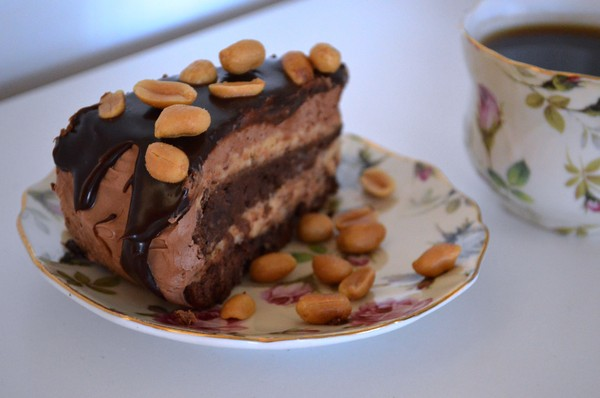

Snickers Tårta

Beskrivning
24 ingredienser | 3 h + kylning
Chokladtårta "extra-allt" med smak av saltsöt chokladkola och jordnötter.
Ingredienser
1 botten
- 3 ägg
- 3 dl strösocker
- 150 g smör
- 2 dl vetemjöl
- 3 tsk bakpulver
- 4 msk kakao
- 1 krm salt
- smör, till formen
- 0,5 dl ströbröd
Peanutbutter Cream
- 3 dl jordnötssmör
- 4 dl färskost (philadelphia)
- 2 dl florsocker
- 2 dl vispgrädde
Mörk Chokladkolasås
- 100 g mörkchoklad 70%
- 1 dl vispgrädde
- 1 dl ljus sirap
- 25 g smör
Ljus chokladfrosting
- 100 g mörkchoklad 70%
- 125 g mjölkchoklad (t ex Marabou)
- 1,35 dl vispgrädde
- 1 msk glykossirap (eller vit sirap)
- 175 g smör, rumstempererat
Topping
jordnötter